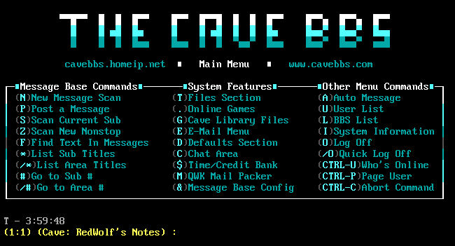

Ensikosketus ohjelmointiin tapahtui Telmac TMC 600 -laitteella
90-luvun alussa, eli lähes heti, kun osasin lukea ja kirjoittaa.
Se oli isäni harrastus, joten oli luonnollista, että
kiinnostukseni tietokoneisiin ja laitteisiin heräsi. Koodasin,
tai oikeastaan kopioin tekstiä ohjekirjasta,
Basic-ohjelmointikielellä, joka oli yleinen valinta tuon ajan
kotitietokoneille ja harrastajille. Tämän tietokoneen avulla
opettelin ohjelmoinnin perusteita, kuten muuttujia, ehtolauseita
ja silmukoita. Telmac tarjosi mahdollisuuden tutustua
tietokoneiden toimintaan ja ohjelmoinnin maailmaan, joka toimii
nyt pohjana uravalinnalle ohjelmoinnin parissa.
Telmac TMC 600 on 1980-luvulla valmistettu mikrotietokone. Se on
suunniteltu ja valmistettu Suomessa Telecomponents Oy:n
toimesta, ja se sai suosiota erityisesti kotiharrastajien
keskuudessa. TMC 600 tarjoaa 4 kilotavua RAM-muistia, ja
laitteella voi ohjelmoida Assembly-kieltä tai
Basic-ohjelmointikieltä käyttäen. Laitteen graafiset
ominaisuudet ovat mitättömät, mutta se pystyi näyttämään tekstiä
ja yksinkertaisia grafiikoita.
Koulussa olin todellinen tietokonenörtti ja halusin oppia
kaikkea tietokoneisiin liittyvää. Olin mukana kaikessa
ATK-toiminnassa, ja opettaja valitsi aina minut auttamaan muiden
luokkien tietotekniikan tunneilla riippumatta siitä mikä tunti
oli kesken. Tämä ei sinänsä haitannut, sillä rakastin
tietokoneiden parissa puuhastelua.
Yläaste meni samalla kaavalla ja valitsin kaikki mahdolliset
valinnaisaineet, jotka liittyivät tietotekniikkaan. Elettiin
mielenkiintoista aikaa, kun internet alkoi levitä kuluttajien
keskuuteen, se oli todella mullistavaa.
Kotona minulla oli Macintosh Plus ja Classic -tietokoneita.
Maceilla ohjelmointi oli rajallista, mutta HyperCard-ohjelmalla
pystyi luomaan omia "dia-pelejä" sekä animaatioita. Sain
Macciini myös ensimmäisen modeemin, se oli 2400 baudinen, joka
toi tekstiä ruudulle noin 5 riviä sekunnissa. Soittelin sillä
AppleGardeniin, joka oli Mac-käyttäjien purkki (BBS - Bulletin
Board System), josta sai mm. ladattua ohjelmia ja keskustella
muiden käyttäjien kanssa. Numero sinne taisi olla 096940694.
Mikä on BAUD?
Baud-nimitys viittaa merkkien siirtonopeuteen sekunnissa.
Baudin ja bitin välillä on kuitenkin tärkeä ero: baud on
yksikkö symbolinopeudelle, kun taas bitti on yksikkö
datanopeudelle. Yksi baud tarkoittaa yhtä symbolia
sekunnissa, ja yksi symboli voi kantaa yhden tai useamman
bitin tiedon.
Vanhoissa modeemeissa käytettiin yksinkertaisia
modulaatiotekniikoita, joissa jokainen symboli kantoi yhden
bitin tiedon. Tässä tapauksessa baudin ja bitin/s
siirtonopeudet ovat samat. 2400 baudin modeemi siis pystyi
lähettämään tai vastaanottamaan 2400 bittiä sekunnissa. 1
kilotavu (KB) on 8000 bittiä (kun 1 tavu on 8 bittiä), 2400
baudin modeemi pystyi lähettämään tai vastaanottamaan 0.3
kilotavua sekunnissa.
Modernimmissa modeemeissa ja viestintäjärjestelmissä voidaan
käyttää monimutkaisempia modulaatiotekniikoita, joissa yksi
symboli voi kantaa useamman bitin tiedon. Tässä tapauksessa
baudinopeus ei enää suoraan kerro datanopeutta.
Myöhemmin sain myös ensimmäisen PC-tietokoneeni. Se oli 133
MHz:n Pentium prosessorilla varustettu Windows 95 -tietokone,
jossa oli 16 Mt:n muisti ja massiivinen 2,5 Gt:n kovalevy.
Noiden tietokoneiden avulla opin paljon tietokoneista ja
ohjelmista.
Tyypillinen
BBS-päävalikko.
Bulletin Board System (BBS) on tietokoneohjelma, palvelin,
joka mahdollistaa käyttäjien viestien lähettämisen ja
vastaanottamisen tietokoneverkon kautta. BBS:ää voidaan
käyttää erilaisiin tarkoituksiin, kuten tiedostojen
jakamiseen, keskustelujen pitämiseen, pelien pelaamiseen
ja yhteisöjen muodostamiseen.
BBS:ät olivat erittäin suosittuja ennen Internetin
yleistymistä, ja niitä käytettiin laajasti 1980- ja
1990-luvuilla. Niitä käytettiin yleisesti harrastajien
keskuudessa ja niitä ylläpitivät usein yksittäiset
henkilöt tai pienet ryhmät. BBS:ät olivat yleensä
saatavilla puhelinlinjan kautta, jolloin käyttäjät
saattoivat soittaa tietokoneelle modeminsa kautta.
Käyttäjät voivat kirjautua sisään BBS:ään, lähettää
viestejä, ladata ja jakaa tiedostoja sekä osallistua
erilaisiin aktiviteetteihin.
Vaikka BBS:ien käyttö on vähentynyt Internetin
yleistymisen myötä, niitä käytetään edelleen joissakin
harrastajapiireissä ja yhteisöissä. Monet BBS-ohjelmistot
ovat myös saatavilla avoimen lähdekoodin lisenssillä, mikä
mahdollistaa niiden jatkokehittämisen ja käytön.
Käytin paljon aikaa soittaen BBS-palvelimiin. Uusi 28800 baudin
modeemi kerrytti vanhempieni puhelinlaskua melkoisesti. Tämä
sama modeemi mahdollisti myös ensi kosketukseni internettiin ja
verkkopelaamiseen. Kaiken tämän ohella koodailin Visual
Basicilla erilaisia tekstiseikkailupelejä, joita jaoin
BBS-palvelimilla muiden käyttäjien kanssa. Taisinpa konffata
myös oman purkkini. Purkkien puhelinnumeroita jaettiin yleensä
purkeissa kaikkien kesken. Tällä tavoin mainostettiin omaa
purkkia.
Nämä kokemukset auttoivat minua ymmärtämään tieto- ja
verkkotekniikan maailmaa ja sen mahdollisuuksia entisestään.
Harrastuneisuus ennen opintoja
Olen harrastelija ohjelmoija, joka nauttii erilaisten
koodausprojektien parissa työskentelystä. Kehitän mielelläni
skriptejä, botteja ja makroja, jotka tekevät arjestani
sujuvampaa ja tehokkaampaa. Tietokoneella istuessani ohjelmointi
on aina lähellä, ja haluan jatkuvasti perehtyä aiheeseen
syvemmin sekä kehittää taitojani.
2000-luvun alussa sain ensikosketukseni web-kehitykseen, kun
olin mukana tekemässä erästä peli fanisivua. Tuolloin pääsin
käyttämään mm. HTML:ää, PHP:tä, mySQL:ää ja Apache-palvelinta.
Minulla on hieman kokemusta Unityllä ja Unreal Enginellä pelien
kehittämisestä. Olen puuhastellut mm. älypistorasioiden ja
kodinohjausjärjestelmien parissa, ja olen kehittänyt mm. näihin
joitain mobiilisovelluksia käyttäen React Native -kehystä.
Olen aina valmis tutustumaan uusiin teknologioihin ja
työkaluihin.
Nykyisyys
Olen opiskelijana Helsinki Business Collegessa. Kyseessä on
koodaajakoulutus joka on suunnattu aikuisille, jotka haluavat tehdä
töitä ohjelmistokehittäjinä. Olen huomannut, että tämä koulutus on
käytännönläheistä verrattuna vastaaviin korkeakouluopintoihin, ja
opintoni keskittyvät 100-prosenttisesti hankkimaan
ohjelmistokehittäjälle tärkeitä avaintaitoja.
Tällä hetkellä olemme kevätkaudella 2023, ja olen jo päässyt
syventymään moniin ohjelmistokehittäjän taitoihin. Olemme käyneet
läpi HTML5:n ja CSS3:n perusteita sekä C#-ohjelmointia. Olen myös
tutustunut Gitin ja DevOpsin perusteisiin.
Syksyn 2023 ja kevään 2024 aikana aihealueinamme ovat React,
ASP.NET, SQL Server ja Entity Framework. Opiskelemme myös
yksikkötestausta ja CI/CD:tä, ketterää ohjelmistokehitystä sekä
tutustumme Azuren peruspalveluihin. Lopuksi toteutamme vielä
ohjelmistokehitysprojektin.
Maaliskuusta 2023 helmikuuhun 2024 opiskelen koulussa opettajien
johdolla, ja alkuvuodesta 2024 pääsen osallistumaan laajempaan
projektikokonaisuuteen opiskelijatiimini kanssa. Projekti
toteutetaan yhteistyössä Rambollin kanssa. Opintojeni loppuaika
vietetään yrityksissä työelämässä oppien, ja suunnitelmissa on
viiden kuukauden harjoittelu kevätlukukaudella 2024. Olen todella
innoissani siitä, mitä olen tähän mennessä oppinut ja siitä, mitä
tulevaisuus tuo tullessaan. Koodaajakoulutus on jo tähän mennessä
ollut erinomainen tilaisuus kehittää itseäni ohjelmistokehittäjänä
ja kasvattaa taitojani alalla.
Tulevaisuus
Olen kiinnostunut teknologian tuomista mahdollisuuksista
yhteiskunnalle ja yritysmaailmalle. Olen utelias seuraamaan, miten
digitalisaatio ja tekoäly muuttavat toimintaympäristöämme ja
minkälaisia uusia innovaatioita ne synnyttävät. Haluan jatkossakin
kehittää osaamistani ja olla osa tätä jatkuvasti muuttuvaa
teknologista maisemaa. Uskon, että omat vahvuuteni ja monipuolinen
kokemukseni eri teknologioista antavat minulle hyvät edellytykset
menestyä alalla ja tuoda lisäarvoa niin itselleni kuin yhteisöille,
joiden kanssa työskentelen.
Valmistuttuani tärkein tavoitteeni on saada töitä
ohjelmistokehityksen parissa, sillä se on yksi lupaavimmista ja
nopeimmin kasvavista aloista ICT-sektorilla. Haluan kehittää
taitojani ohjelmistokehittäjänä ja luoda ratkaisuja, jotka
vaikuttavat positiivisesti ihmisten elämään.
Yksi tavoitteistani on jatkaa opiskelua ammattikorkeakoulussa ja
valmistua ICT-insinööriksi. Tämä koulutusala tarjoaa laajan
valikoiman mahdollisuuksia työmarkkinoilla ja antaa minulle vankan
pohjan menestyä alalla.
Opiskellessani ammattikorkeakoulussa aion osallistua erilaisiin
projekteihin, jotka antavat minulle käytännön kokemusta
ohjelmistokehityksestä. Tämä auttaa minua ymmärtämään alan haasteita
ja vaatimuksia paremmin. Lisäksi pyrin verkostoitumaan alan
ammattilaisten kanssa ja osallistumaan erilaisiin tapahtumiin, jotka
mahdollistavat uusien kontaktien luomisen ja uusimman tiedon
saamisen alalta.
Valmistuttuani ammattikorkeakoulusta aion hakea lisää kokemusta
ohjelmistokehityksen parista ja edetä urallani kohti ICT-insinöörin
tehtäviä. Otan vastaan haasteita ja opin uutta jatkuvasti, jotta
voin kehittyä ammatillisesti ja tuoda oman panokseni alalle. Pitkän
aikavälin suunnitelmani sisältävät myös jatko-opiskelun, joka antaa
minulle syvällisempää osaamista ja pätevyyttä alallani. Tämä auttaa
minua erottumaan työmarkkinoilla ja saavuttamaan korkeampia tehtäviä
tulevaisuudessa.
Uskon, että kovalla työllä, sitoutumisella ja intohimolla pystyn
saavuttamaan tavoitteeni ja menestymään. Odotan innolla tulevia
haasteita ja mahdollisuuksia, joita tämä urapolku tuo eteeni.
 Telmac TMC-600 tietokonemuseossa.
Telmac TMC-600 tietokonemuseossa.